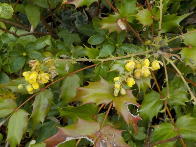
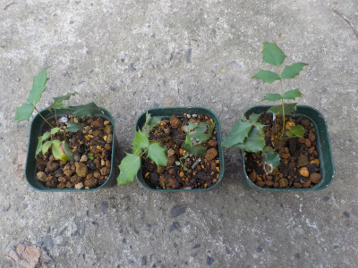
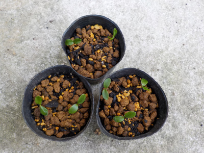
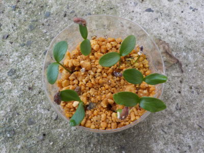
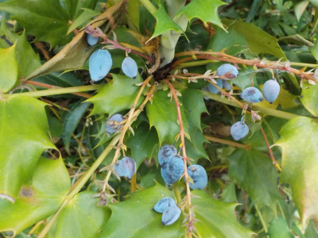

ヒイラギナンテンが開花中。
2024/03/31

あんまり花が付いてないのでちょっと寂しいですね。
この木で出来たタネから育てているものは、今年はまだ花はなさそうです。
2024/03/31

あんまり花が付いてないのでちょっと寂しいですね。
この木で出来たタネから育てているものは、今年はまだ花はなさそうです。
2022/10/02

去年芽が出たヒイラギナンテンですが、ほとんど成長していませんでした。それでも最近ちょっと大きくなったので植替えしました。
3株大きくなったので3株育てることにしました。
2021/07/31

ヒイラギナンテンの実生は、根っこも芽も硬く植え替えしやすかったです。
小さな木って感じでした。
2021/07/18

蒔いてから3週間でこれです。
木の種なので翌年の春に芽が出るんじゃないかと思っていましたが、直ぐに出るんですね。
短期間で発芽するならポットに種を蒔いてもよかったかな。
2021/06/27

ヒイラギナンテンの実が熟れて、ちょっとシワシワになっていました。
たぶん種が出来てます。
10粒採って種蒔きしました。
どれくらいの確率で発芽するでしょうか。
360度花が咲いたら見事だろうな。